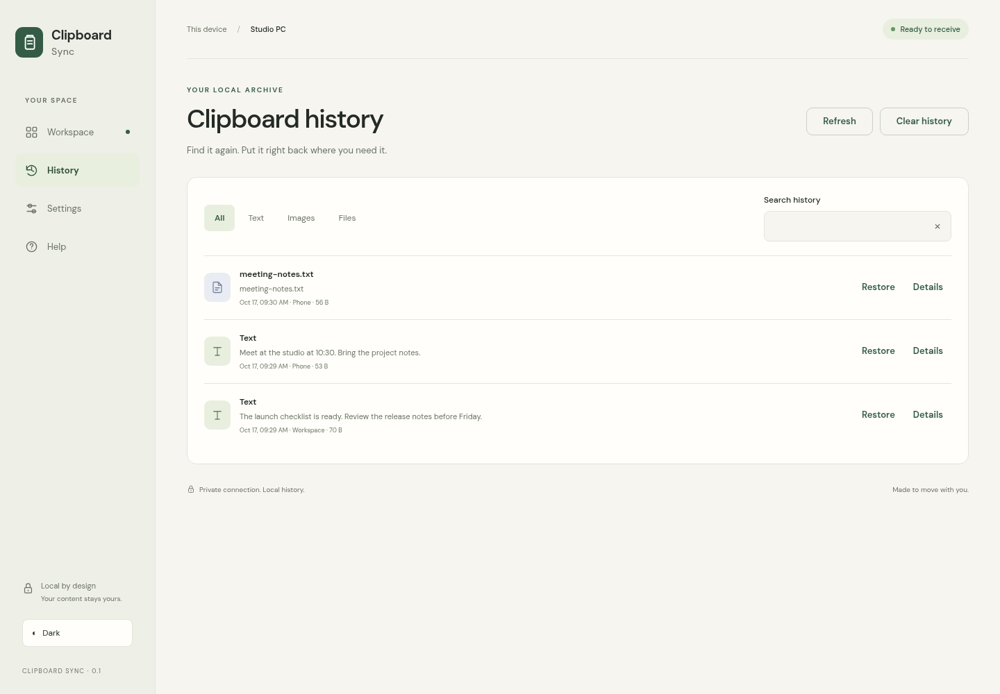

Your phone.
Your clipboard.
One less step.
Send something from your phone and paste it on Windows. Keep a local history of clipboard changes, and connect more computers when you need them.
Set up your first computer
These checkboxes save progress in this browser. They record your checklist, not a verified installation.
How the pieces fit
QR pairing
Clipboard + local Git history
Other computers
The working app
The receiver shows pairing, clipboard history, and connection state. It reports a successful copy only after the native clipboard operation completes.

Interface capture. Native Windows clipboard behavior is verified separately.
Send, then paste.
No phone app or account needed. Use your camera and browser.
- Connect your phone and Windows computer to the same Wi-Fi.
- Open the receiver's pairing screen and scan its QR code.
- Choose Text or File. Type a message, choose an image, or select a file.
- Press Send and wait for the result.
- Paste on Windows with Ctrl + V.
Text works in text fields; images work in image-aware apps; files work in File Explorer and apps that accept file attachments.
Limits and formats
Uploads and synced files are limited to 25 MiB per item. Text transfers accept up to 100,000 characters. Supported images become Windows bitmaps; unsupported formats are copied as files. Files are saved locally before being placed on the clipboard.
Pair again
Reset pairing in the receiver to invalidate the old phone link, then scan the new QR code. The link authorizes sending to your clipboard. Share it only with the devices you intend to use.
Your clipboard has a memory.
The receiver watches clipboard changes and saves supported text, bitmap images, and ordinary file drops in a local Git repository.
Find and restore
Open History. Filter by type, search text or filenames, and inspect an entry. Restore copies it back onto the clipboard. Download saves the original image or file.
Storage
%LOCALAPPDATA%\ClipboardSync\history
Each entry has a UUID folder, metadata, and original content. Each new item creates a Git commit. Git is bundled in the portable app. History is never pushed to a Git server.
Capture boundaries
Monitoring checks for changes about every 400 milliseconds. It captures Unicode text, bitmap images, and ordinary file drops. Proprietary application formats, directories, and files larger than 25 MiB are unsupported. Changes faster than the polling interval can be missed. Identical consecutive items are deduplicated. Capture warnings appear in the receiver.
Clear and recovery
Clear removes visible entries and commits the change. Older content remains recoverable in Git, so this is not secure erasure. Quit the receiver before manually managing retention or deleting its history directory. A saved history entry does not by itself mean a native clipboard write succeeded.
Connect your computers.
An authenticated WebSocket relay passes updates between connected computers in the same room.
- Start the sync server on a reachable host.
- Open Clipboard Sync on every Windows computer.
- In Settings, enter the same server URL, room, and server token.
- Enable sync and wait for Connected.
- Copy on one computer and paste on another.
| Setting | Example | Purpose |
|---|---|---|
| Server | http://192.168.1.50:8787 | Reachable relay address |
| Room | my-devices | Groups connected computers |
| Token | Your generated token | Authenticates relay access |
Live behavior
Updates are saved in each receiving computer's own Git history and applied to its clipboard. Device IDs, event IDs, and clipboard sequence handling prevent echo loops. Pause stops capture and incoming processing.
Offline behavior
Local history and phone transfers keep working. Receivers reconnect with increasing delays. The relay stores no content and does not replay missed updates. Offline changes are not queued. Reconnect, then copy again. Simultaneous changes resolve in arrival order.
A small server. A live connection.
Host the relay with Docker Compose. Clipboard content is forwarded in memory, never written to the relay's disk.
Windows hosting
- Clone or download this repository. Start Docker Desktop with Compose.
- Run
host.bat. It creates a protected local.envif needed. - Choose detached hosting or interactive logs. The default builds local source; use
--pullfor the published image. - The script starts the service, checks health, and prints its LAN URL.
- Read
SERVER_TOKENfrom your local.envand enter it in each receiver. Never commit this file.
host.bat --detached host.bat --logs host.bat --pull --detached
Other Docker hosts
python -c "import secrets; print('SERVER_TOKEN=' + secrets.token_urlsafe(32))" > .env
chmod 600 .env
docker compose up -d --build
curl http://localhost:8787/healthPort 8787 is published by default. Set SERVER_PORT locally to use another port. The server home page shows setup help and current health, never its token.
Published image
ghcr.io/ding-ding-projects/clipboard-sync-server:latest
The build workflow publishes from main and tags the exact source commit. Local Compose builds remain available if registry publication is unavailable. The container runs as a non-root user with a read-only filesystem.
Stop or update
docker compose down docker compose pull docker compose up -d
Leaving logs keeps the service running. Stop is a separate action. Use a TLS reverse proxy with HTTPS/WSS beyond a trusted local network; HTTP does not encrypt clipboard content or tokens.
Your data, locally first.
| Data | Stored where | Sent where |
|---|---|---|
| Clipboard entries | Local Git history | Connected computers in the enabled room |
| Uploaded files | Local app data | Same room when sync is enabled |
| Pairing and admin tokens | Local secrets outside history | Receiver authentication |
| Server token | Local secrets / host .env | Relay authentication |
| Relay content | Memory only | Other connected room members |
History can contain passwords, messages, and other sensitive copied content. Pause capture when needed. Local Git storage is not encryption. Protect your Windows account and disk.
Phone authorization can send transfers and read availability. It cannot browse history or change settings. Reset pairing revokes old phone links. Room names organize clients sharing one server token; use separate servers/tokens for separate trust groups.
Find the missing connection.
Before reporting an issue
Check the version, actual connection error, and pause state. Another app may be holding the clipboard. Report only what is needed to reproduce a problem. Do not attach tokens, local clipboard history, or copied private content.
The integration surface.
Use Authorization: Bearer TOKEN. Admin and phone privileges differ. Errors return JSON with an error string and an appropriate HTTP status. Download Postman collection.
| Method / path | Authorization | Purpose |
|---|---|---|
| GET /api/status | Admin | Pairing, capture, history and sync state |
| GET /api/phone | Phone / admin | Availability, size limit, heartbeat |
| POST /api/transfer | Phone / admin | Text or base64 image/file transfer |
| GET /api/history?type=all&q= | Admin | Newest 100 matching entries |
| GET /api/history/{id}/detail | Admin | Full text and metadata |
| GET /api/history/{id}/file | Admin | Original content download |
| POST /api/history/{id}/restore | Admin | Copy entry to native clipboard |
| POST /api/history/clear | Admin | Clear visible history, body {"confirm":true} |
| POST /api/settings | Admin | Update pause, setup, sync settings |
| POST /api/pair/reset | Admin | Rotate phone token |
| GET /health | None, relay | Relay health |
| GET /ws/{room} | Server token | WebSocket upgrade |
Text transfer
{"type":"text","text":"Ready to paste","deviceName":"Phone"}File transfer
{"type":"file","name":"note.txt","mime":"text/plain","data":"SGVsbG8="}Realtime event
{
"type": "clipboard",
"id": "7ed2fc0b-71ef-4fdb-b3ca-b563783932d1",
"origin": "8cb13ee2-23b5-48e6-89ce-32f9112b6791",
"createdAt": "2026-10-17T12:00:00Z",
"payload": {"type": "text", "text": "Ready to paste"}
}Rooms accept 1 to 64 letters, numbers, underscores or hyphens. IDs are UUIDs. The relay validates type, payload, ID, timestamp and size. Maximum wire message: 36 MiB. Binary item maximum: 25 MiB.
Build the app.
The root entrypoints obtain missing Python, Node and portable Git into an ignored local toolchain, verify pinned download checksums, install dependencies, and build the frontend and executable. The installer entrypoint also obtains Inno Setup and produces an unsigned per-user installer.
build.bat /s build-installer.bat /s
Without /s, the script offers to launch after success. Tools use project-local or user-scoped paths and need no administrator rights.
Linux development
python -m venv .venv . .venv/bin/activate python -m pip install -r requirements.txt -r server-requirements.txt npm ci npm run build python -m unittest discover -s tests -v python -m receiver --headless --no-browser
Linux headless mode verifies HTTP and storage only, never native Windows copying. Windows packaging is performed by the Windows workflow. Physical-machine native acceptance remains separate.
Offline guide
The release includes ClipboardSync-Guide.exe, a single portable companion serving this bundled guide on loopback. Articles and navigation need no network. External downloads and source links do.
How it works.
Architecture
The Python receiver owns the native Windows clipboard, local Git history, authenticated HTTP API and WebSocket client. A locally bundled browser interface supplies the desktop workspace and phone sender. A separate aiohttp relay forwards room events in memory.
Event lifecycle
- A phone transfer or native sequence change produces a validated payload.
- The receiver saves content and metadata, then creates a local Git commit.
- Incoming transfers attempt a native clipboard write and report the actual result.
- A connected sync client sends a unique event to its room.
- Other room members save and apply it without sending it back.
Recovery
Settings and secrets live outside Git history. Entries use independent UUID folders. Git retains prior revisions when visible entries are cleared. Stop the app and make a backup before manual recovery.
Known boundaries
Windows 10/11 x64; Unicode text, bitmaps and ordinary files up to 25 MiB. Proprietary formats, directory drops and every intermediate change between polling ticks are not captured. Sync is live forwarding without offline replay or conflict merging.
Evidence
Tests cover authentication, validation, Git persistence, watcher simulation, forwarding, room isolation, and echo handling. Actual container health and forwarding have been exercised. Native clipboard, firewall, installer and fresh-machine acceptance must be reported from Windows execution. Browser screenshots prove interface behavior only.